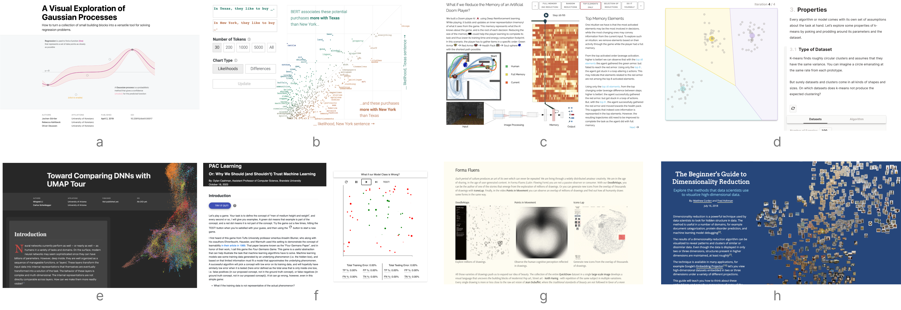

7th Workshop on
Visualization for AI Explainability
October 13, 2024 at IEEE VIS in St. Pete Beach, Florida
The role of visualization in artificial intelligence (AI) gained significant attention in recent years. With the growing complexity of AI models, the critical need for understanding their inner-workings has increased. Visualization is potentially a powerful technique to fill such a critical need.
The goal of this workshop is to initiate a call for "explainables" / "explorables" that explain how AI techniques work using visualization. We believe the VIS community can leverage their expertise in creating visual narratives to bring new insight into the often obfuscated complexity of AI systems.

Important Dates
July 30, 2024August 06, 2024, anywhere: Submission DeadlineSeptember 10, 2024:Author NotificationOctober 1, 2024:Camera Ready Deadline October 13, 2024 - Morning Session (ET)
Program Overview
All times in ET (UTC -5).
| 8:30am | Welcome from the Organizers |
| Session I (75 minutes) | |
| 8:35 -- 9:15 | Opening Keynote: David Bau - @davidbau
Resilience and Human Understanding in AI What is the role of human understanding in AI? As increasingly massive AI systems are deployed into an unpredictable and complex world, interpretability and controllability are the keys to achieving resilience. We discuss results in understanding and editing large-scale transformer language models and diffusion image synthesis models, and how these are part of an emerging research agenda in interpretable generative AI. Finally, we talk about the concentration of power that is emerging due to the scaling up of large-scale AI, and the kind of infrastructure that will be needed to ensure broad and democratized human participation in the future of AI. |
| 9:15 -- 9:45 | Lightning Talks I
Can Large Language Models Explain Their Internal Mechanisms? -- Nada Hussein, Asma Ghandeharioun, Ryan Mullins, Emily Reif, Jimbo Wilson, Dr. Nithum Thain, Dr Lucas Dixon The Matrix Arcade: A Visual Explorable of Matrix Transformations -- Yi Zhe Ang Explaining Text-to-Command Conversational Models -- Petar Stupar, Prof. Dr. Gregory Mermoud, Jean-Philippe Vasseur TalkToRanker: A Conversational Interface for Ranking-based Decision-Making -- Conor Fitzpatrick, Jun Yuan, Aritra Dasgupta Where is the information in data? -- Kieran Murphy, Dani S. Bassett Explainability Perspectives on a Vision Transformer: From Global Architecture to Single Neuron -- Anne Marx, Yumi Kim, Luca Sichi, Diego Arapovic, Javier Sanguino, Rita Sevastjanova, Mennatallah El-Assady |
| 9:45 -- 10:15 | Break |
| Session II (75 minutes) | |
| 10:15 -- 10:45 | Lightning Talks II
The Illustrated AlphaFold -- Elana P Simon, Jake Silberg A Visual Tour to Empirical Neural Network Robustness -- Chen Chen, Jinbin Huang, Ethan M Remsberg, Zhicheng Liu Panda or Gibbon? A Beginner's Introduction to Adversarial Attacks -- Yuzhe You, Jian Zhao What Can a Node Learn from Its Neighbors in Graph Neural Networks? -- Yilin Lu, Chongwei Chen, Matthew Xu, Qianwen Wang ExplainPrompt: Decoding the language of AI prompts -- Shawn Simister Inside an interpretable-by-design machine learning model: enabling RNA splicing rational design -- Mateus Silva Aragao, Shiwen Zhu, Nhi Nguyen, Alejandro Garcia, Susan Elizabeth Liao |
| 10:45 -- 11:30 | Closing Keynote: Adam Pearce - @adamrpearce
Why Aren't We Using Visualizations to Interact with AI? Well-crafted visualizations are the highest bandwidth way of downloading information into our brains. As complex machine learning models become increasingly useful and important, can we move beyond mostly using text to understand and engage with them? |
| 11:30am | Closing |
Call for Participation
Explainable submissions (e.g., interactive articles, markup, and notebooks) are the core element of the workshop, as this workshop aims to be a platform for explanatory visualizations focusing on AI techniques.
Authors have the freedom to use whatever templates and formats they like. However, the narrative has to be visual and interactive, and walk readers through a keen understanding on the ML technique or application. Authors may wish to write a Distill-style blog post (format), interactive Idyll markup, or a Jupyter or Observable notebook that integrates code, text, and visualization to tell the story.
Here are a few examples of visual explanations of AI methods in these types of formats:
- [interactive article] A Visual Exploration of Gaussian Processes
- [interactive article] Why Momentum Really Works
- [interactive article] A Visual Introduction to Machine Learning
- [interactive article] Art-Inspired Data Experiments on Neural Network Model Decay
- [interactive article] Attacking Discrimination with Smarter Machine Learning
- [markup] The Myth of the Impartial Machine
- [markup] The Beginner's Guide to Dimensionality Reduction
- [notebook] t-SNE Explained in Plain JavaScript
- [notebook] How to build a Teachable Machine with TensorFlow.js
- [notebook] Titanic Machine Learning from Disaster
While these examples are informative and excellent, we hope the Visualization & ML community will think about ways to creatively expand on such foundational work to explain AI methods using novel interactions and visualizations often present at IEEE VIS. Please contact us, if you want to submit a original work in another format. Email: orga.visxai (at) gmail.com.
Note: We also accept more traditional papers that accompany an explainable. Be aware that we require that the explainable must stand on its own. The reviewers will evaluate the explainable (and might chose to ignore the paper).
Hall of Fame
Each year we award Best Submissions and Honorable Mentions. Congrats to our winners!VISxAI 2023
- PAC Learning Or: Why We Should (and Shouldn't) Trust Machine Learning -- Dylan Cashman
- Understanding and Comparing Multi-Modal Models -- Christina Humer, Vidya Prasad, Marc Streit, Hendrik Strobelt
- Do Machine Learning Models Memorize or Generalize? -- Adam Pearce, Asma Ghandeharioun, Nada Hussein, Nithum Thain, Martin Wattenberg, Lucas Dixon
VISxAI 2022
- K-Means Clustering: An Explorable Explainer -- Yi Zhe Ang
- Poisoning Attacks and Subpopulation Susceptibility -- Evan Rose, Fnu Suya, David Evans
VISxAI 2021
- What Have Language Models Learned? -- Adam Pearce
- Feature Sonification: An investigation on the features learned for Automatic Speech Recognition -- Amin Ghiasi, Hamid Kazemi, W. Ronny Huang, Emily Liu, Micah Goldblum, Tom Goldstein
VISxAI 2020
- Comparing DNNs with UMAP Tour -- Mingwei Li and Carlos Scheidegger
- How Does a Computer "See" Gender? -- Stefan Wojcik, Emma Remy, and Chris Baronavski
VISxAI 2019
- What if we Reduce the Memory of an Artificial Doom Player? -- Theo Jaunet, Romain Vuillemot, and Christian Wolf
- Statistical Distances and Their Implications to GAN Training -- Max Daniels
- Selecting the right tool for the job: a comparison of visualization algorithms -- Daniel Burkhardt, Scott Gigante, and Smita Krishnaswamy
VISxAI 2018
- A Visual Exploration of Gaussian Processes -- Jochen Görtler, Rebecca Kehlbeck and Oliver Deussen
- The Beginner's Guide to Dimensionality Reduction -- Matthew Conlen and Fred Hohman
- Roads from Above -- Greg More, Slaven Marusic and Caihao Cui
Organizers (alphabetic)
Alex Bäuerle - Axiom Bio
Angie Boggust - Massachusetts Institute of Technology
Fred Hohman - Apple
Steering Committee
Adam Perer - Carnegie Mellon University
Hendrik Strobelt - MIT-IBM Watson AI Lab
Mennatallah El-Assady - ETH AI Center
Program Committee and Reviewers
Jane Adams
Camelia D. Brumar
Jaegul Choo
Brandon Duderstadt
Angus Forbes
Seongmin Lee
Katelyn Morrison
Rita Sevastjanova
Venkatesh Sivaraman
James Wexler
Catherine Yeh
Tim Barz-Cech
Yuexi Chen
Aeri Cho
Bhavana Doppalapudi
Jianben He
Sichen Jin
Panfeng Li
Tong Li
Huyen N. Nguyen
Haowei Ni
Yu Qin
Rubab Zahra Sarfraz
Johanna Schmidt
Ryan Yen